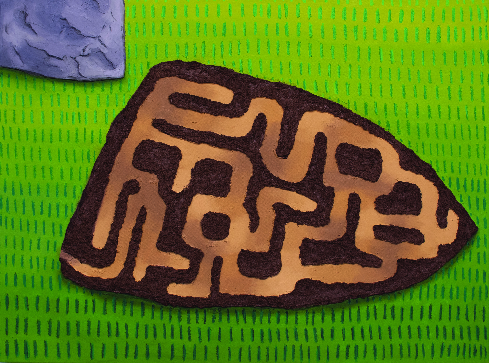

Abandoned Anthill
Josiah Ellner
Oil Paint, Molding Paste, Sand and Oil Pastel
30 x 40 in
About the Work :: “Translations of moments of connection between people and nature, captured through the lense of a digital native. My paintings are narratives that revolve around the tumultuous relationship between humanity and the natural world. I am drawn to moments that embody the feeling of oneness with nature. The formal decisions I make in my work are all informed by the characteristics of these moments which tend toward the awkward, whimsical, playful and sometimes slightly humorous. This results in ungainly and awkward figures and environments that are patterned and playful. Through these abstractions I strive to achieve a heightened narrative that encapsulates the connections and the concealed discomfort we have with the natural world.”